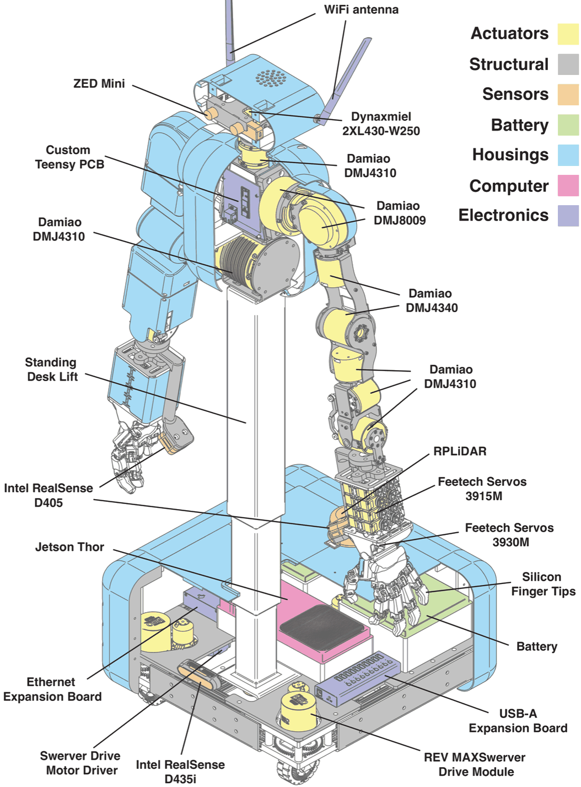

56 functional degrees of freedom driven by 59 motors, almost entirely 3D-printed, assembled in one weekend. One coherent platform — not a stack of parts.
Drag to orbit, scroll to zoom, open it full-screen — then move the joints. Every slider's range comes straight from MABEL's URDF; the model articulates live.
Seven subsystems, pulled apart along the axes you would assemble them on. Almost every part is off the shelf or 3D-printed — there is not a machined component in here — and each one is labelled with what it actually is, so you can read this drawing and the bill of materials side by side.

Eight subsystems, head to wheels. Slide through them — each card is the real part, rendered from the same model the robot is built to, with its measured specs, what it costs, and the BOM lines behind it.
A build is a claim, and a claim wants a number. So we ran the ISO 9283 schedule on the real robot and measured every landing, then traced commanded paths in simulation across four controller conditions. Both panels below are drawn live from the experiment archives — pick a station, pick a path.